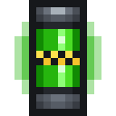

ТВЭЛ
alaindustrial:uranium_fuel_rod
Сводка
ТВЭЛ (тепловыделяющий элемент) — единственное топливо реактора и конец урановой цепочки мода. Собирается из оболочки ТВЭЛ и одного обогащённого урана, вставляется правым щелчком в реакторную колонну — по одному, до четырёх в стойку — и отдаёт там ровно 144 000 EU/FE, после чего снова становится пустой оболочкой.
Это первый и пока единственный потребитель refined_uranium. Обогащённый уран мод производит с , и до этапа 2 эпика его не тратил ни один рецепт: длинная цепочка руда → пыль → концентрат → обогащённый уран заканчивалась предметом, который некуда было деть.
Двухступенчатое топливо — и почему не сразу обогащённый уран
Реактор мог бы жечь refined_uranium напрямую, и на одну ступень цепочки стало бы меньше. Так не
Сборка держит стержни, а не слиток. Топливо здесь физическое: его видно в прозрачной стойке, и «четыре стержня» читаются как объект, а «четыре слитка в стойке» — нет. Экранирующая пластина в рецепте — это оболочка. Тот же материал, из которого построена комната; для игрока связь читается без объяснений. Ступень даёт место для развития. MOX, обеднённый уран и стержни других сортов встают в ту же форму, не трогая переработку руды. И она же даёт многоразовость. Оболочку можно вернуть, урановую таблетку — нет. Без этой ступени дозаправка реактора не отличалась бы от первой закладки (см. оболочку ТВЭЛ).
Как он горит
| Параметр | Значение | Ключ конфига |
|---|---|---|
| Заряд стержня | 144 000 EU/FE = × | , |
| Шкала прочности | 1000 делений | не настраивается |
| Цена одного деления | 144 EU/FE, округление ВВЕРХ | производное |
| Вклад в выработку | 6 EU/FE/т до бонусов соседства, при полной глубине | |
| Вклад в нагрев | 4 единицы шкалы за тик, при полной глубине | |
| Жизнь при 6 EU/FE/т | 24000 тиков = 20 минут | производное |
Стержень — это количество энергии, а не длительность. 144 000 EU/FE он отдаёт при любой раскладке: бонус соседства покупает мощность (стержень сгорает быстрее), потолок HV — автономность (стержень живёт дольше), но объём в нём не меняется никогда. Прежняя редакция обещала «1 152 000 × множитель соседства» с колонны, то есть плотная упаковка давала топливо из воздуха; этап 4 это закрыл.
| Раскладка | EU/FE/т на один стержень | Жизнь стержня |
|---|---|---|
| Одна колонна (4 стержня) | 6 | 20 мин |
| Две смежные колонны | 9 | 13,3 мин |
| Три в ряд | 12 | 10 мин |
| Четыре в ряд | 15 | 8 мин |
| Четыре квадратом | 18 | 6,7 мин |
| Слой 3×3 — 36 стержней делят 512 EU/FE/т потолка | 14,2 | 8,4 мин |
| Комната 3×3×3 забита — 108 стержней | 4,7 | 25,3 мин |
Глубина погружения — это дроссель, а не скидка: на 50 % стержень отдаёт половину EU/FE в такт, даёт половину тепла и расходуется вдвое медленнее. Работать вполсилы значит растянуть уран во времени, а не выбросить его — общее количество EU/FE в стержне не зависит ни от чего.
Прочность — это остаток заряда
У стержня есть полоса прочности, и она означает буквально то, что показывает: сколько энергии в нём осталось. Шкала в 1000 делений, каждое стоит 144 EU/FE. Половина полосы — половина заряда.
Тысяча делений, а не 144 000, выбрана потому, что полоса шириной в шестнадцать пикселей всё равно не покажет больше; круглое число ещё и читается — «повреждение 250» это ровно четверть. И оно не зависит от конфига: администратор сервера может поднять, стержень станет ёмче, а полная полоса по-прежнему будет значить «целый».
Контроллер тратит энергию тиками по несколько десятков EU/FE, а деление стоит 144, поэтому остаток переносится: колонна копит недосписанный расход и снимает деление, когда накопилось на целое. Без переноса стержень не изнашивался бы вовсе — каждый тик округлялся бы в ноль. Арифметика переноса покрыта тестами и не зависит от запуска игры.
Округление цены деления идёт вверх: при усечении каждое деление стоило бы чуть меньше, чем даёт, и последние деления оказались бы бесплатной энергией.
Недогоревший стержень возвращается
Раньше — нет. Вынуть начатый стержень было нельзя, при сломе стойки он тоже не выпадал, и «просто посмотреть, что там стоит» было дорогой ошибкой. Причина была одна: остаток горения жил в блок-сущности стойки, и вернувшийся предмет вернулся бы полным, то есть «вынуть-вставить» стало бы вечным реактором.
С этапа 4 остаток живёт в самом предмете, поэтому терять его больше незачем:
ПКМ пустой рукой отдаёт стержень со всей его прочностью; слом колонны (в том числе крипером) роняет всё содержимое, недогоревшее в том числе; вставленный обратно стержень продолжает с того места, где остановился.
Выгоревший стержень не исчезает, а становится оболочкой ТВЭЛ прямо в стойке. Обеднённого стержня на выходе по-прежнему нет: предмет depleted_uranium в моде есть и приходит другим путём (мутация); связать его с реактором — открытый вопрос.
Рецепты
Крафт — бесформенный, ×1 за раз.
оболочка ТВЭЛ + обогащённый уран → ТВЭЛДва предмета в любые клетки сетки. Заправка идёт десятками штук за раз, и полная раскладка 3×3 на каждый стержень была бы наказанием за масштаб. Формой предмета занимается рецепт оболочки ТВЭЛ — там как раз полная сетка 3×3, и делается она один раз.
Цепочка от руды до стержня
| Шаг | Машина | Вход → выход | EU/FE/операция |
|---|---|---|---|
| 1 | Дробитель | 1 сырой уран → 2 урановой пыли | 300 |
| 2 | Термоцентрифуга | 1 пыль → 2 урановых концентрата (×2 операции) | 800 × 2 |
| 3 | Компрессор | 2 концентрата → 1 обогащённый уран (×2 операции) | 260 × 2 |
| 4 | Верстак | 1 обогащённый уран + оболочка ТВЭЛ → 1 ТВЭЛ | — |
Итог: одна руда урана = два стержня, ровно, без остатка и без округлений. Переработка стоит 2420 EU/FE на руду = 1210 EU/FE на стержень; при первой сборке к этому добавляется оболочка (≈400 EU/FE на экранирующую пластину плюс железо) — ≈1610 EU/FE. При дозаправке оболочка уже есть, и стержень стоит только своих 1210 EU/FE и половины руды.
Экранирующая пластина — это ⅓ палладиевого слитка и один слиток закалённого железа, плюс удар кузнечным молотом. Палладий добывается только в Аду, поэтому реактор недостижим до похода туда даже при полных сундуках урана — но только один раз: оболочки возвращаются.
Прогрессия
Тир: нет (у предмета нет энергии; реактор, который он питает, — HV). Требует: refined_uranium (уран + термоцентрифуга + компрессор) и оболочку ТВЭЛ — то есть палладий, а значит Ад. Открывает: выработку реакторной комнаты. Пустая комната — это диагностическое устройство; стержни делают её генератором. Развитие: MOX-стержень и стержни других сортов — за рамками эпика (см. `FUTURE_CONTENT.md`, fuel_rod_mox).
Связанное
Оболочка ТВЭЛ — оболочка, из которой он собирается и в которую превращается. Реакторная колонна — куда он вставляется и как изнашивается. Контроллер реактора — что его жжёт и во что превращает. Термоцентрифуга и компрессор — две машины, делающие обогащённый уран. Дробитель — начало цепочки, руда в пыль.
Крафт
Бесформенный крафт
▶
ТВЭЛ